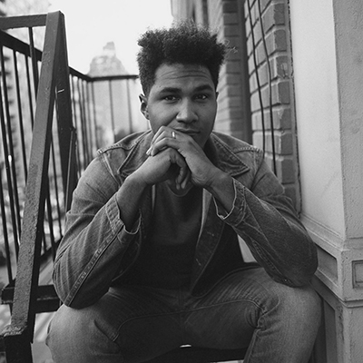

.container {
overflow: hidden;
background-color: #fff;
font-family: Courier New;
}
.container a {
float: left;
font-size: 16px;
color: black;
text-align: center;
padding: 14px 16px;
text-decoration: none;
}
.dropdown {
float: left;
overflow: hidden;
}
.dropdown .dropbtn {
font-size: 16px;
border: none;
outline: none;
color: black;
padding: 14px 16px;
background-color: inherit;
font-family: Courier New;
display: block;
}
.container a:hover, .dropdown:hover .dropbtn {
background-color: #fff;
}
.dropdown-content {
display: none;
position: absolute;
background-color: #f9f9f9;
min-width: 160px;
box-shadow: 0px 8px 16px 0px rgba(0,0,0,0.2);
z-index: 1;
}
.dropdown-content a {
float: none;
color: black;
padding: 12px 16px;
text-decoration: none;
display: block;
text-align: left;
}
.dropdown-content a:hover {
background-color: #ddd;
}
.dropdown:hover .dropdown-content {
display: block;
}
Hi! I'm Sharone, a NYC-based Jr Developer & Photographer
Hailing originally from Maryland, Sharone moved to New York City in 2009, he graduated from LaGuardia Community College with a degree in commercial photography. Since his move to New York City, he continues to establish himself as a photographer. In 2013, Sharone became a traveling photographer for hip-hop artist J. Cole's chart-topping sophomore album, Born Sinner. Currently, he is working on gallery images for his first show & book and studing to become a Jr Web Developer.